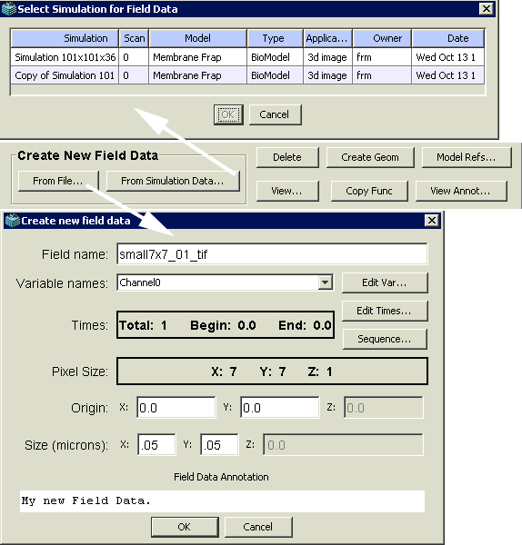
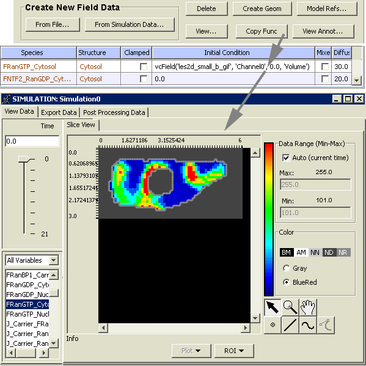

Field Data - Incorporating experimental data in simulations
In VCell, the initial conditions for spatial simulations can be either defined analytically by a function of spatial coordinates or based on experimental results (e.g. fluorescence imaging data).
The latter is done with the aid of a tool called Field Data Manager, allowing a user to initiate simulations using irregular spatial distributions of molecular species observed in the image data
The tool can also be applied to cases where the output of one spatial simulation (e.g. a simulation to determine steady-state distributions of molecular species) serves as initial condition for another simulation (e.g. after a specific stimulus event)
Field Data Objects can contain more than one variable (set of data values) and be defined over multiple time points.
Field Data Function behaves as any other mathematical function (e.g. square root, sine, etc…) when being evaluated within a VCell simulation.
Field Data Functions essentially act as a lookup table mapping values from an (x, y, z) rectangular data grid in the Field Data Object to an (x, y, z) location in the mesh of a spatial simulation
 The Field Data Manager display provides an overview of current Field Data Objects owned by a VCell user and includes tools for creating, accessing and using the Field Data Objects
The overview section (bottom part) of the Manager display contains a tree-like view of all the Field Data objects the user has created,
arranged alphabetically by name. Additional information includes the following items: “Size”, showing the number of elements in the Field Data Object for each spatial dimension (x, y, z);
“Origin”, showing the position (x, y, z) of the upper, left, bottom corner in simulation domain space (by default this is assigned (0,0,0) unless reassigned by the user during Field Data creation);
“Extent”, showing the size (x, y, z) in the simulation domain space occupied by the Field Data Object data grid;
“Times”, showing the time domain associated with each separate data grid defined in the Field Data Object; and “Variables”, showing individually defined data sets within the Field Data Object (all sharing the same Size, Origin, Extent and Time information).
Double-clicking the “Variables” item will display an expanded list of the names and type (volume, membrane) of the variables contained within the parent Field Data Object.
The Field Data Manager display provides an overview of current Field Data Objects owned by a VCell user and includes tools for creating, accessing and using the Field Data Objects
The overview section (bottom part) of the Manager display contains a tree-like view of all the Field Data objects the user has created,
arranged alphabetically by name. Additional information includes the following items: “Size”, showing the number of elements in the Field Data Object for each spatial dimension (x, y, z);
“Origin”, showing the position (x, y, z) of the upper, left, bottom corner in simulation domain space (by default this is assigned (0,0,0) unless reassigned by the user during Field Data creation);
“Extent”, showing the size (x, y, z) in the simulation domain space occupied by the Field Data Object data grid;
“Times”, showing the time domain associated with each separate data grid defined in the Field Data Object; and “Variables”, showing individually defined data sets within the Field Data Object (all sharing the same Size, Origin, Extent and Time information).
Double-clicking the “Variables” item will display an expanded list of the names and type (volume, membrane) of the variables contained within the parent Field Data Object.

The tools in the control section (top part) of the Manager display allow the user to create, manipulate and use Field Data Objects.
Field Data Objects can be created in one of two ways.
The Objects to be defined by data originated outside the VCell environment (such as microscope image data or numerical data generated with a different program such as MATLAB,
MathCAD, etc…) are created using the “From File …” button in the “Create New Field Data” section of the Manager.
Provided the dataset can be read by VCell, it will be imported as a Field Data Object. The user will be asked to specify (edit) the Object attributes (a unique Object name not used for any other Object in the Field Data Manager,
names of included variables, Origin, Extent, Times) using a “FieldData Info” dialog.
Field Data Objects can also be created from simulations results by using the “From simulation Data…” button. For this, the user must open in advance a corresponding VCell model, containing completed simulation data.
A dialog with a table of VCell simulation data that can be used to create a Field Data Object will appear.
Selecting a row from the table and pressing the “OK” button will display the “FieldData Info” dialog (see above).
The Origin and Extent (“Size (microns)”) and Times information is predefined by the simulation data information and cannot be edited.

To incorporate a Field Data Object into a VCell simulation, a function with a specific syntax is generated. In the BioModel workspace, this function is entered in the “Initial Conditions” section of a spatial application.
In the MathModel workspace, this function is simply pasted to the list of functions in the VCML Editor window.
The appropriate function syntax is automatically created, once the user selects a variable name from the “Variables” item of a Field Data name in the Field Data Manager display list and presses the “Copy Func” button.
If the Field Data Object has multiple time information, a further dialog will appear asking for a particular time which the function ought to reference.
The Field Data Function text is copied to the system clipboard and can be pasted into an appropriate application in the BioModel workspace or in the VCML Editor in the MathModel workspace, as described above.
For example, if a previously defined Field Data Object had been created and given the Field Data name 'fdata_gif' and contained a volume variable named “Channel0” with multiple x, y, z data grids defined for times 0.0 to 5.0 at intervals of .5 seconds,
a VCell function created from the spatial data at time 3.5would be defined as “vcField(' fdata_gif','Channel0',3.5,'Volume')”.
The word “vcField (…)” in the function text is the built-in VCell function name for Field Data and the information within the parentheses (Field Data name,
variable name, time point, variable type) tells the VCell where on the VCell server the Field Data information is located. When the user runs a simulation of a VCell model that contains a function vcField(…),
the Field Data values are used when the function is called. These values are mapped from the original values used to create a Field Data Object. If the Field Data spatial domain is different from the simulation mesh,
the interpolated values are computed, but no interpolation is required if the simulation mesh size is the same as the Field Data size.
 Field Data Objects can be deleted only if they are not being used as a Field Data function in any VCell model simulation.
A list of all VCell models using a particular Field Data Object can be obtained by pressing the “Model Refs…” button.
A table showing the VCell model information will appear if the Field Data Object is referenced.
The Field Data Object annotation introduced by the user in the process of creating a Field Data Object can be viewed and edited by pressing the “View Annot…” button.
The Field Data Object “image” can be viewed by pressing the “View…” button. A Simulation Results Viewer will appear displaying the Field Data Object as VCell data.
Field Data Objects can be deleted only if they are not being used as a Field Data function in any VCell model simulation.
A list of all VCell models using a particular Field Data Object can be obtained by pressing the “Model Refs…” button.
A table showing the VCell model information will appear if the Field Data Object is referenced.
The Field Data Object annotation introduced by the user in the process of creating a Field Data Object can be viewed and edited by pressing the “View Annot…” button.
The Field Data Object “image” can be viewed by pressing the “View…” button. A Simulation Results Viewer will appear displaying the Field Data Object as VCell data.
Field Data variables can be used as a template for creating new spatial geometries by selecting a name under the “Variables” sub-tree of an expanded Field Data name and clicking the “Create Geom” button.
The VCell Geometry Editor will appear preloaded with an image representing values from the selected Field Data variable